社長のお金の勉強会 全3回
第1回 12月3日（木）15:00〜16:30
社長の財布と、
会社の財布
社長も守る。
会社も、社員も、家族も守る。

共催：足柄上商工会・東京海上日動火災保険株式会社
今日の90分
| 15:00 | はじめに・自己紹介 |
| 15:20 | 3回で、手元に残るもの・3つの質問 |
| 15:30 | 社長のお金は、誰と見ていますか |
| 15:40 | 財布が混ざると、何が起きるか |
| 15:55 | 守りの順番 |
| 16:00 | ワーク：手元のお金は、何か月分？ |
| 16:15 | 今日、1つ決める・次回のご案内 |
オンラインの方は、チャットで質問をどうぞ。
スタッフが拾って、こちらにお届けします。

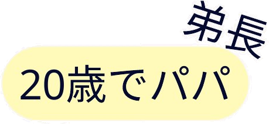
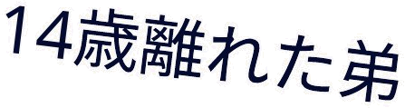
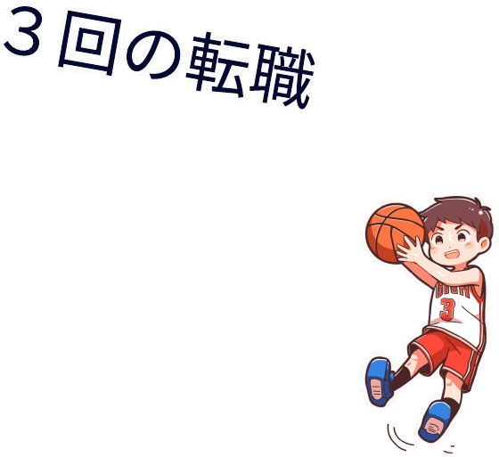
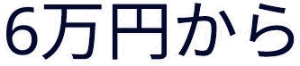
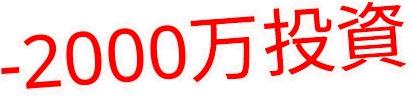
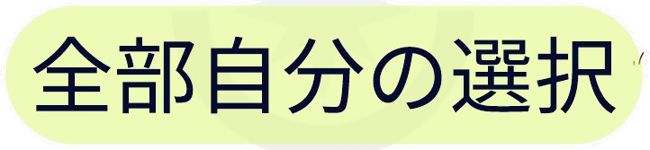
3回参加すると、手元に残るもの
第1回 12/3（木）今日
社長自身を整える
- 手元のお金が何か月もつか
- 社長と会社のお金の分け方
- 老後に向けた最初の一歩
持ち帰る数字手元のお金の月数
第2回 12/8（火）
会社を守る
- もしものときの不足額
- 借入・保証の伝え方
- 事業を引き継ぐ入口
持ち帰る数字もしもの不足額
第3回 12/11（金）
社員と家族を守る
- 引退後に必要な額
- 社員が辞めない仕組み
- 引き継いだ後の実例
持ち帰る数字引退までの差額

3つの数字がそろうと、
「社長のお金の全体設計シート」ができあがります。
3回ご参加の方に、個別にお作りします。
見逃した回は、録画でご覧いただけます。
今日のゴール
帰り道に、
「うちの手元のお金は、
あと何か月もつか」が
分かっている。
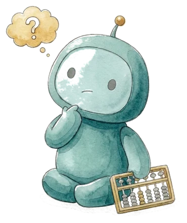
3回を通して、大事にしたい3つの姿勢
3
今日、1つ決める
全部やらなくていい。
1つだけ決めて帰る
この3つは、今日の中で何度も出てきます。
最後に、1つ選んでいただきます。
3回を終えた、12月の終わりに
通帳を閉じて、
「来年も、
これで大丈夫だ」
と言える年末。
- 社長と会社のお財布が、
きちんと分かれている - もしものとき、家族が
何から手をつけるか知っている - 社員に「来年もよろしく」と、
迷わず言える
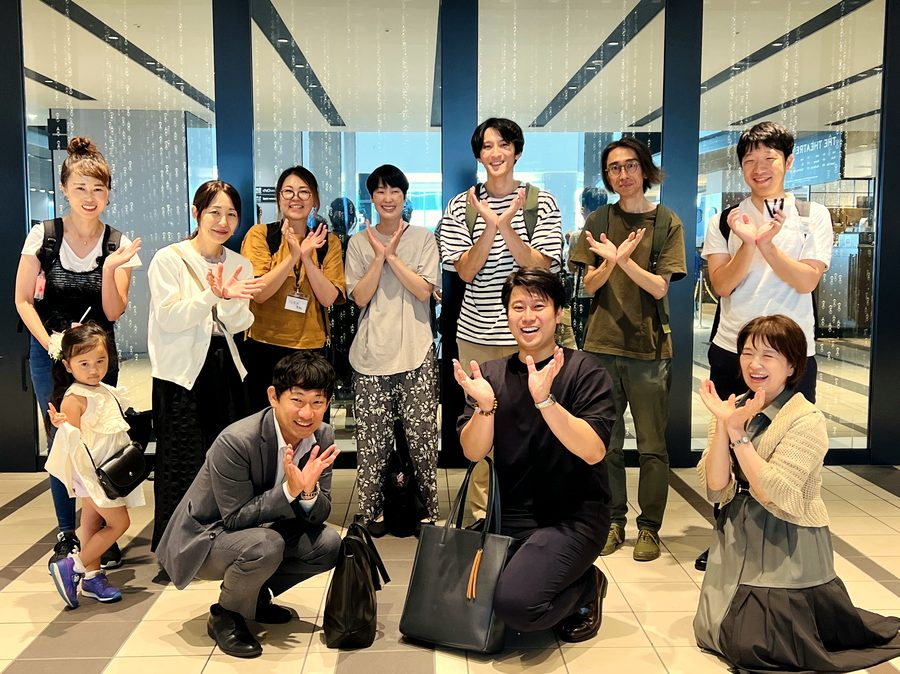
今日、一緒に考える社長
Aさん
- 仕事
- 足柄で工務店を経営
- 年齢
- 61歳
- 会社
- 社員7名・年商1億2千万円
- 決算
- 3月
Aさんの口ぐせ
「会社の通帳は、
毎日見てる。
自分のは、そのうち。」
※ よくあるご相談をもとにした、架空の社長です。
今日の話は、Aさんの数字で進めます。
3つの質問、すぐに答えられますか？
1
会社の預金で、
何か月もちますか？
今日、出します
2
役員報酬は、
いつ・何を基準に
決めましたか？
今日、決め方のルールを
3
社長が倒れたら、
借入は誰が
返しますか？
第2回で
Aさんは、3つとも答えられませんでした。
1つでも迷ったら、今日の90分がお役に立ちます。
会社のお金は、毎日見ている。
社長のお金は、誰と見ていますか。
社長のお金は？
社長個人のお金。
もしもの段取り。
家族のこれから。
この3つを1本の線でつないで見る人は、
意外といません。
よくあるのは、「守る順番」が逆になっていること
よくある順番
会社 → 社員・家族 → 社長自身
社長自身が、いちばん後回し
▶
この勉強会の順番
① 社長自身 → ② 会社
→ ③ 社員と家族
社長が倒れれば、
会社も社員も家族も一緒に揺れます。
だから順番は、社長ご自身から。
経営相談の現場から
製造業・50代の社長
「通帳に2,000万円ある。うちは大丈夫」
一緒に数えてみると、
毎月の固定費は700万円。→ 約3か月分
そのうち800万円は、
翌月に支払う予定のお金。→ 実質1.7か月分
※ ご相談をもとに、内容を変えています。
「大丈夫」が、
「あと2か月弱」に
社長がその日に決めたのは、
1つだけでした。
毎月1日に、
月数を書く。
今日は、みなさんの
「あと◯か月分」を出します。
財布が混ざると、何が起きるか
1役員報酬を
「なんとなく」決める
会社に残すか、
社長に渡すか。
決め方で、税金と
手元のお金が変わります。
2会社の口座から
個人の支払い
帳簿に
「社長への貸し」が残ります。
銀行は、
ここをよく見ています。
3個人保証で、
財布と借入がつながる
会社の借入が、
社長個人と家族の
問題になります。
どれも、今日すぐに困ることではありません。
だからこそ、後回しになりやすいのです。
役員報酬を変えられるのは、
決算のあとの3か月だけ
Aさん（3月決算）の場合。
※ 事業年度が始まって3か月以内に決めるのが原則です（業績悪化などの例外あり）。
ちょうどいい額は、
会社に残すときの税金と、社長個人の税金・社会保険のバランスで決まります。
では、Aさんはいくらが、ちょうどいいのか。
それは、決算書を見ないと出せません。
「社長への貸し」は、こうして増えていく
銀行は、この貸しを
「戻ってこないお金」として見ることがあります。
分けるだけで、
会社のお金も、社長のお金も、見えるようになります。
個人保証は、
外せる道ができています
2014年〜経営者保証の
ガイドライン
条件がそろえば、
保証なしで借りられる、
外せる、という考え方。
2024年3月〜保証料を少し上乗せ
すれば、保証なしを
選べる制度
信用保証協会の
保証付き融資で。
その条件のひとつ直近の決算で、
「社長への貸し」が
ないこと
役員報酬が
適切な範囲であることも。
財布を分けることが、
保証を外す入口になります。
※ ほかにも条件があります。
うちの借入は外せるのか、家族に何を伝えるかは、第2回で。
社長の老後は、誰が守る？
会社のために走り続けて、
自分の分は「そのうち」になっていませんか。
第3回で、引退までの差額を一緒に出します。
守りの順番は、この3段
1手元のお金
社長個人と会社、
それぞれ何か月もつか。
2近い将来に使うお金
設備・車・子どもの進学など、
数年以内に出ていくお金。
3そのあとで、将来の準備
社長の退職金づくりは、
1と2が整ってから。
道具は、順番が決まってから選ぶ
社長の退職金をつくる道具は、いくつかあります。
（例：小規模企業共済 など）
ただし、途中で引き出せない道具もあります。
手元のお金が足りないまま始めると、
いざというときに使えません。
だから今日は、道具の前に「手元のお金」から。
どの道具を、いつ、いくらで使うかは、第3回で。
まず、Aさんで計算してみます
Aさんの手元のお金は、何か月分？
会社
預金 1,200万円
÷ 毎月の固定費 600万円
＝ 2か月分
Aさん個人
預金 150万円
÷ 毎月の生活費 50万円
＝ 3か月分
毎日、通帳を見ていたのに、
「何か月もつか」は知らなかった。
次は、みなさんの番です。
ワーク（10分）
手元のお金は、何か月分？
会社の分
会社の預金 ÷ 毎月の固定費
（人件費・家賃・返済など）
分からないところは、だいたいで大丈夫です。
宿題シートの「計算メモ」に書いてください。
出てきた数字の、ひとつの目安
会社
固定費の3か月分〜
業種や季節の波で変わります。
社長個人
生活費の6か月分〜
ご家族の状況で変わります。
大事なのは、目安に届いているかより、
「今の月数を知っている」ことです。
※ よく使われる目安です。
会社ごとに適した月数は、個別に一緒に考えます。
どれか1つだけ、決めて帰りましょう
宿題シートの下に、チェックを入れてください。
3回が終わるころ、Aさんは
いま
「自分のは、
そのうち。」
手元のお金の月数も、
保証のことも、
退職金のことも、まだ。
▶
12月の終わり
- 会社は3か月分、自分は6か月分。
目標の月数が決まった
- 保証を外せるか、
銀行に聞く準備ができた
- 引退までにいくら要るか、
数字で分かった
「来年の4月、役員報酬を決めるのが
楽しみになった。」
今日、あえてお話ししていないこと
1役員報酬は、
いくらが
ちょうどいい？
個別の30分で決算書があれば、
試算できます。
2うちの保証は
外せる？
家族に何を伝える？
第2回 12/8（火）Aさんの会社で、
続きを見ます。
3社長の退職金は、
どの道具で
いくら？
第3回 12/11（金）引退までの差額を、
一緒に出します。
ここから先は、
会社ごとに答えが変わるからです。
宿題シートの使い方
3持って帰る
第3回で、3つの数字を
1枚につなげます。
計算に迷ったら、
個別の30分で一緒に出しましょう。
今日の式は、ざっくり版。
30分で、御社の数字にします
- 宿題シートの数字が、実際の金額で出ます
- 役員報酬のちょうどいい額を、決算書から試算します
- 次に何から手をつけるかが決まります
- 対面（商工会）かオンラインか、選べます
ご希望の方だけで大丈夫です。
右のQRから、1分で予約できます。
最後に、3つだけ教えてください
○をつけるだけ、1分で終わります。
受付でお預かりします。
オンラインの方は、チャットに出す予約ページからどうぞ。
「全体設計シート」の、
1つ目のピースがそろいました
3つそろうと、
社長のお金の地図が1枚になります。
次回のご案内
第2回 12月8日（火）15:00〜16:30
社長が倒れた翌日、
会社で何が起きるか
- もしものとき、会社と家族に足りない額が分かる
- 借入や保証のことを、家族に何から伝えるかが整う
社長が倒れた翌日、
社員の給料は払えますか？
Aさんの会社で、続きを見ていきます。
今日の「手元のお金の月数」を、そのまま使います。
宿題シートを、お持ちください。
今日の3つの姿勢
明日から続けたい姿勢を、
1つだけ選んでください。
今日は、
ありがとうございました。
12月8日（火）、またお会いしましょう。
共催：足柄上商工会・東京海上日動火災保険株式会社 ／ 運営：fulfull株式会社